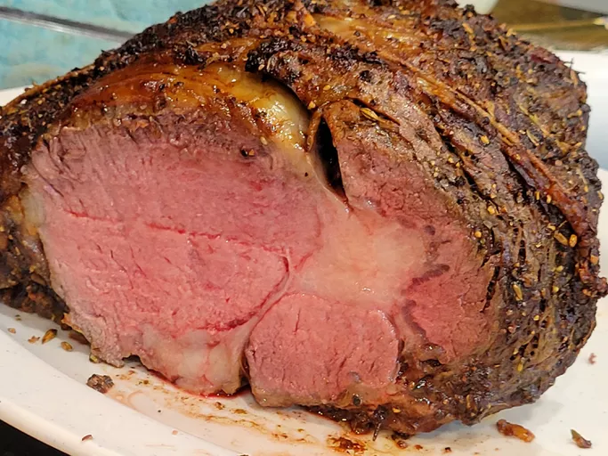

Perfect Prime Rib

Use my easy "mathematical method" for cooking prime rib, and you'll be rewarded with the best prime rib that's perfectly pink and delicious. For the math to work, you must leave the beef out at room temperature for at least 6 hours.
Ingredients
- 1 bone-in prime rib roast
- 1/4 cup unsalted butter, softened
- 1tbsp freshly ground black pepper
- kosher salt to taste
Steps
- Gather the ingredients. Place prime rib roast on a plate and bring to room temperature, 2 to 4 hours. Preheat the oven to 500 degrees F (260 degrees C).
- Combine butter, pepper, and herbes de Provence in a bowl; mix until well blended. Spread butter mixture evenly over entire roast. Season roast generously with kosher salt.
- Roast the 4-pound roast in the preheated oven for 20 minutes. (If your roast is larger or smaller than 4 pounds, multiply the exact weight times 5 minutes.)